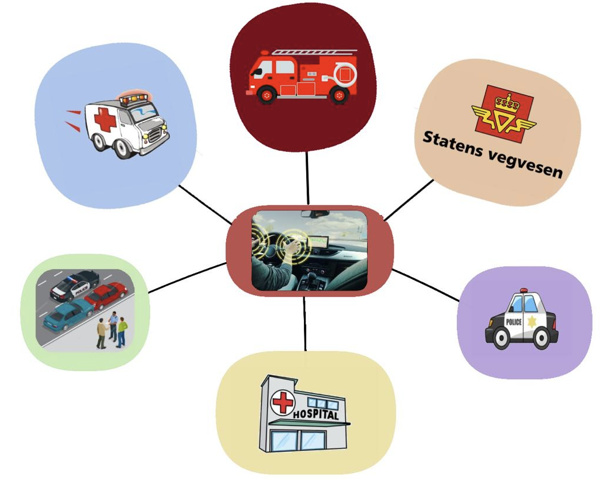
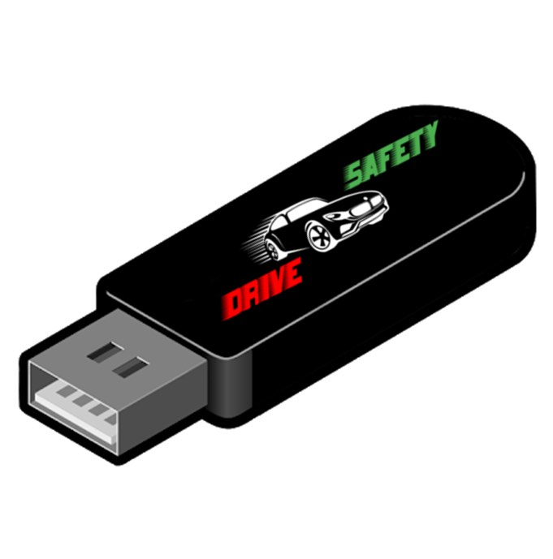
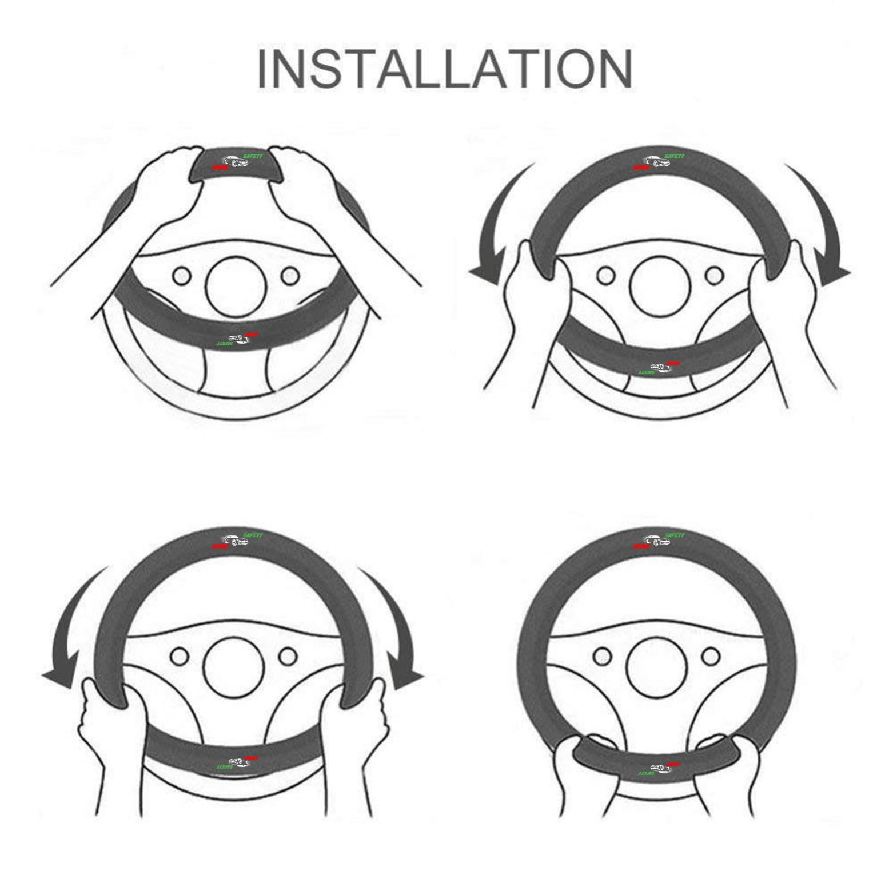

FUNCTION
How does the Safety Drive system work?
Safety Drive is an application that is installed on the automotive system, so that it is linked to
it and helps it to save important information related to the safety of the driver.
Safety Drive is associated with government departments such as hospital, police, traffic and auto repair shops.
The idea of the new system is based on the presence of some sensors in the car that analyse the data
after any accident of the car, and then send it automatically to the emergency centre directly through
the car, which helps to speed up the arrival of ambulances or ambulances to the site of the accident
instead of traditional methods and waiting A person to report a traffic accident.
Safety Drive automatically sends some data, such as the location of the vehicle, the severity of the accident and the resulting damage,
in addition to the users' condition and measuring the heart rate through the pulse sensors on the steering wheel, to the central information store,
which in turn receives this data and sends it to the nearest ambulance or ambulance to rescue the wounded
The procedures that the Safety Drive system takes before calling
Automatic emergency braking ABS.
Using front cameras and radar, the safety duration will trigger an automatic emergency braking that
warns the driver of an imminent frontal collision with another vehicle, pedestrian, or something,
then our app will break the car on behalf of the driver if no action is taken.

Driver alert system in case of feeling drowsy while driving:
As this system monitors the driver’s attention and alertness level, by measuring the number of
heartbeats that increase when feeling sleepy, for example, or monitoring the movement of the car
and the extent of its deviation, so alerts the driver of the need to take breaks while driving,
through a set of voice messages that the system launches, but if these are alerts are not useful,
as the system automatically tightens the seat belts, and in critical driving situations and stop the
vehicle automatically.
There is also a feature in this app to ensure the driver’s protection and health.
This app contains the driver’s complete health file, which emergency and paramedics and doctors can
rely on to know the driver’s condition.
In addition to this, the app contains an emergency call feature in the event of an accident on the road,
or the driver's health condition was bad such as fainting or dizziness.
In short, this feature allows you to call emergencies in your country, police or civil protection,
by means of the sense feature on the driver's steering wheel. Which in turn measures the heart rate
and pressure rate of each driver, and if the rate changes from normal, the app sends an automatic
message with the location of the person whose heart rate changed due to the accident or fainting to
the nearest hospital or police station.
How to install?

First, you must purchase our products from the store nearest to your city. The product is a USB driver
and steering wheel cover that has special sensors to measure the heart rate
To install the app in the car's system, insert the USB driver into the USB port in your car and run the application.
Meanwhile, install our steering wheel cover on the car's steering wheel.
here is a picture that explains how to install the steering wheel cover
The steering wheel cover is working on measuring every driver’s heart rate and blood pressure and has
a smart technique that remembers every driver’s normal health condition and sends an argent message
to the closest hospital or police station in case if something was abnormal.

Enjoy safe driving with our security software that protects you everywhere you go.
😊